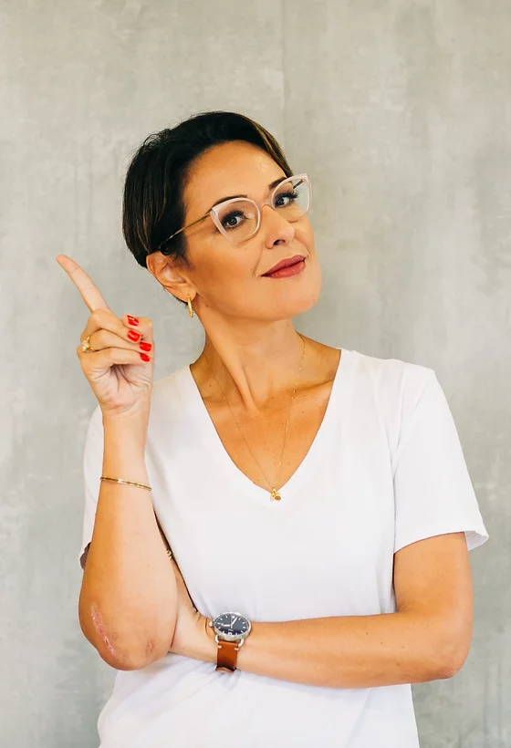

aprenda escrita científica comigo!
SOBRE MIM
Eu sou a Fernanda Scussel e, desde 2018, compartilho no instagram @pesquisanapratica dicas sobre como a gente pode ter uma caminhada mais tranquila na vida acadêmica. Acredito que mestrado e doutorado devem ser momentos intensos, mas sem desespero!
Minha missão é formar pesquisadores autônomos, capazes de desenvolver boas pesquisas, se tornarem mais produtivos, mas sem perder o equilíbrio. Eu te ensino!
CURRÍCULO
Doutora em Administração | UFSC 2020 Mestra em Administração | UnB 2015 Bacharel em Administração | UDESC/ESAG 2009
Atualmente cursando pós-graduação em Neuroeducação | Faculdade Estácio de Sá
Mais de 30 artigos publicados em periódicos e congressos científicos sobre consumo, experiência de consumo, marketing de relacionamento e epistemologia.
Experiência com métodos qualitativos, quantitativos e revisões sistemáticas de literatura.
Acesse meu Lattes
NO INSTAGRAM
@pesquisanapratica
No instagram eu compartilho uma série de dicas sobre escrita científica, leitura, organização de estudos, rotina e método. Por lá, você vai encontrar muuuito conteúdo, além de algumas reflexões sobre a vida acadêmica, que vão te ajudar a criar uma experiência positiva nesse período!
É lá também que você vai ficar sabendo quando acontecem meus cursos!
Não deixe de me seguir!
Acesse meu instagram!